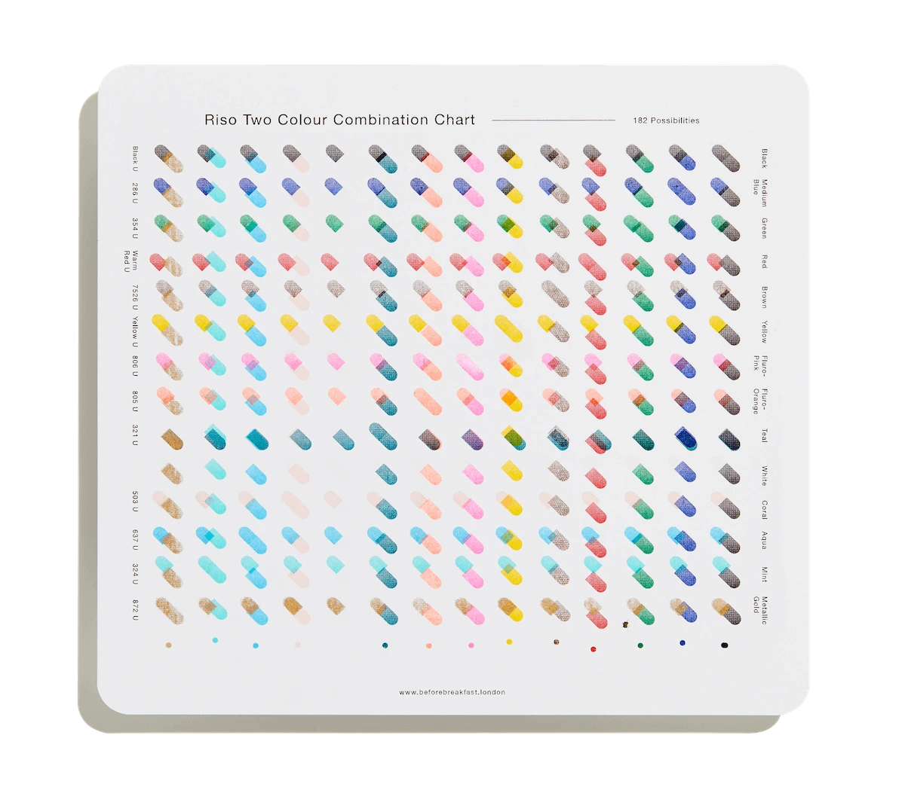
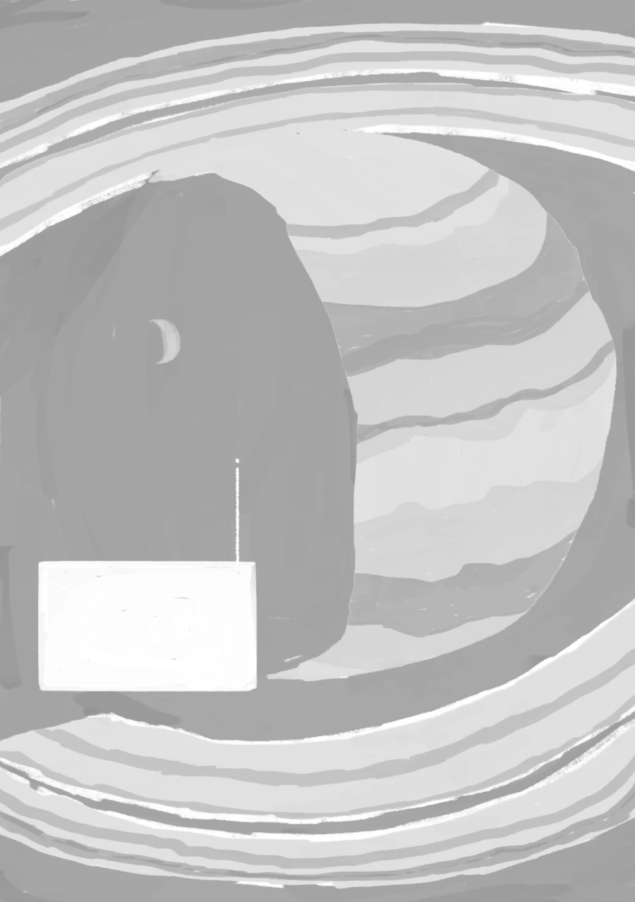
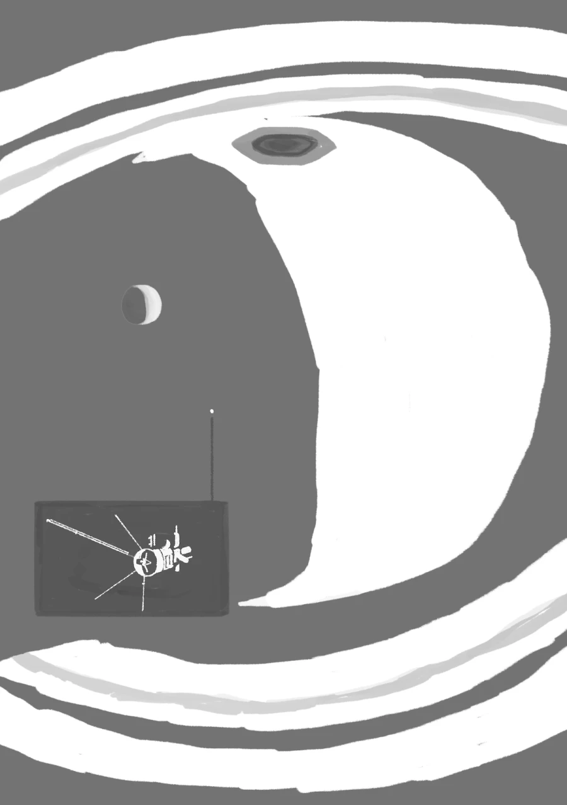

Overlap and mix
☀︎
Recently I watched one of Jen Simmon's engaging CSS Grid tutorials about Overlap on the Web. It made me wonder if I could use this approach to simulate duotone risograph printing.
Risograph printing
Riso is a low-cost, low-energy, and sustainable printing method that combines screen printing and photocopying essences, printing one colour at a time and building layers to create a finished artwork. Different colours and intensities can be overlapped to obtain a wide range of possibilities.

To test this web-riso approach, I'm using an illustration of the planet Saturn ♄ and the Cassini–Huygens research mission's spacecraft. The original artwork has two colour channels: each corresponding to a different colour.

